Německo — města, hrázděné uličky a zámky
Berlín a Drážďany, Heidelberg nad Neckarem, Gengenbach a Rothenburg. Fotografie z měst i zastávek na cestách.
🏛 Berlín
Hlavní město. Brandenburská brána, Říšský sněm, zbytky Berlínské zdi, Memorial obětí holokaustu, Museumsinsel — město plné kontrastů, kde minulost a současnost stojí vedle sebe. (16 fotografií · červen 2019)


Dalších 12 fotografií (celkem 16)Sbalit další fotografie


🏰 Postupim (červen 2019)


⛪ Drážďany
Frauenkirche znovupostavený z trosek, Zwinger, Semperoper. Saská metropole, kterou stojí za to vidět v každém ročním období. (6 fotek · prosinec 2018)


Dalších 2 fotografií (celkem 6)Sbalit další fotografie


🚗 Wolfsburg
Sídlo Volkswagenu a domov Autostadtu — areál tematických pavilonů automobilek (VW, Audi, Porsche, Lamborghini, ŠKODA, Bentley) přímo u továrny. Pro každého automobilového nadšence pojem. (10 fotek · červenec 2019)


Dalších 6 fotografií (celkem 10)Sbalit další fotografie


♨ Baden-Baden
Lázeňské město na okraji Schwarzwaldu. Kasino z 19. století, římské termální prameny, rozsáhlé parky a klasická wilhelmovská architektura. (6 fotek · červen 2019)


Dalších 2 fotografií (celkem 6)Sbalit další fotografie


🕯 Dachau — památník
Bývalý koncentrační tábor, dnes památník a místo paměti. Návštěva, která se nedá popsat — jen prožít. Cesta, kterou by měl absolvovat každý, komu nestačí jen číst o historii. (13 fotek · duben 2019)


Dalších 9 fotografií (celkem 13)Sbalit další fotografie


🚀 Raketenstation Hombroich
Bývalá raketová stanice NATO přeměněná na uměleckou kolonii a muzeum. Betonové bunkry mezi loukami, sochy, galerie a moderní pavilony — neobvyklý kontrast vojenské minulosti a současného umění. (8 fotek · 2019)


Dalších 4 fotografií (celkem 8)Sbalit další fotografie


🏰 Köln / Kolín nad Rýnem
Pracovní zastávky v Kolíně — Dom (katedrála), Hohenzollernbrücke a procházky po nábřeží Rýna. (9 fotek · 2019)


Dalších 5 fotografií (celkem 9)Sbalit další fotografie


Gengenbach
Hrázděné domy na náměstí a v uličce Engelgasse. Červen 2019.
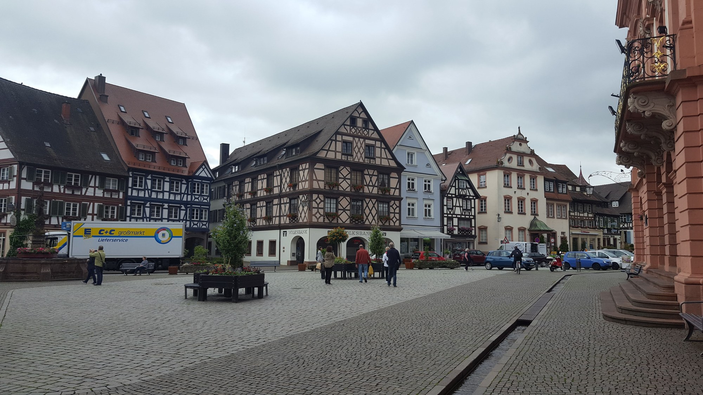
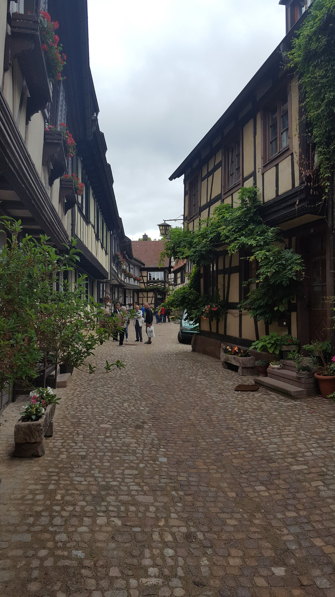
Heidelberg
Zámek nad městem a Starý most přes Neckar. Červen 2019.
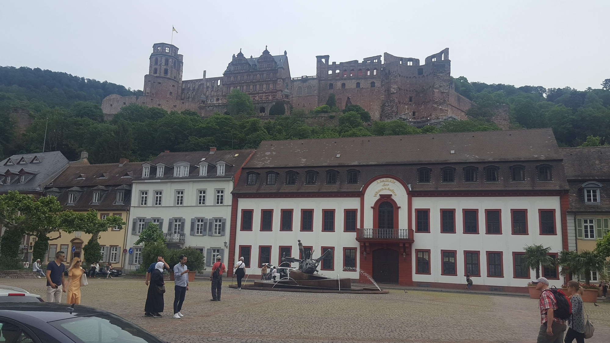
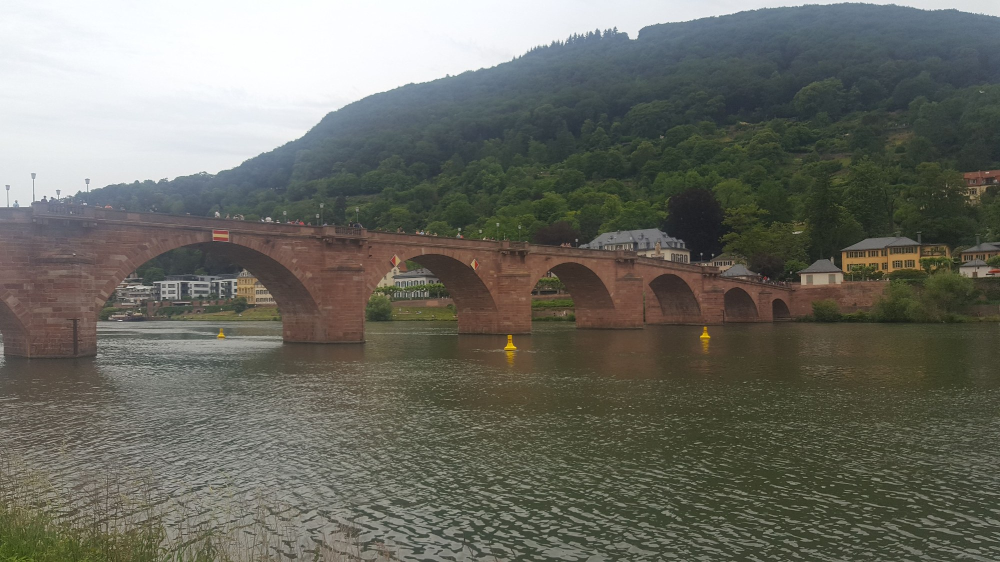
Rothenburg ob der Tauber
Náměstí a městská brána v historickém centru. Červenec 2019.
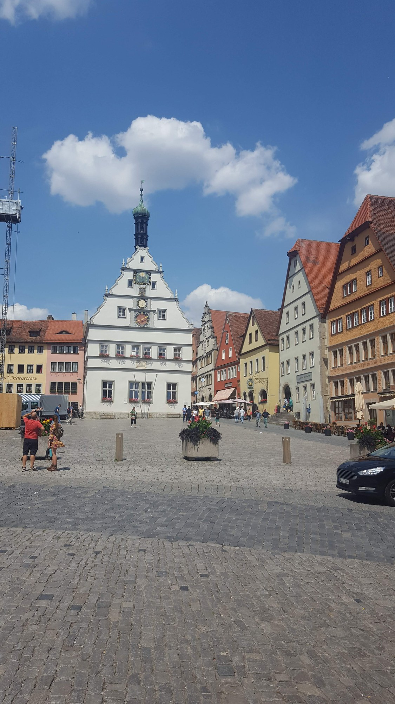
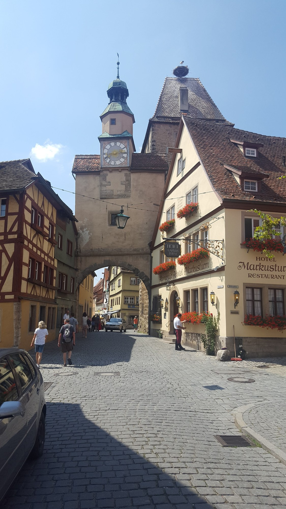
Frankfurt nad Mohanem
Panorama města z protějšího břehu Mohanu. Červen 2019.
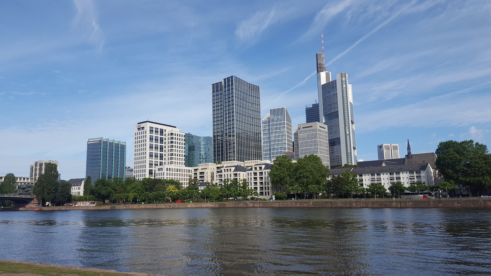
Hohenschwangau
Žlutý zámek na zalesněném návrší. Květen 2019.
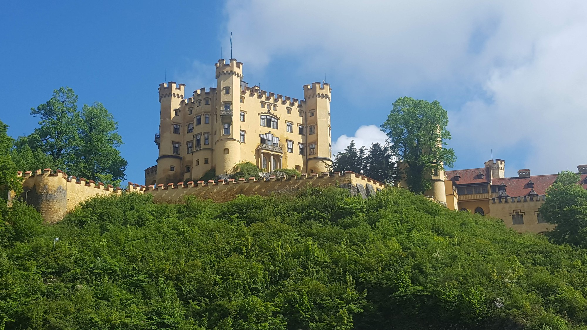
Mnichov — Allianz Arena
Pohled na charakteristickou fasádu stadionu. Červen 2019.
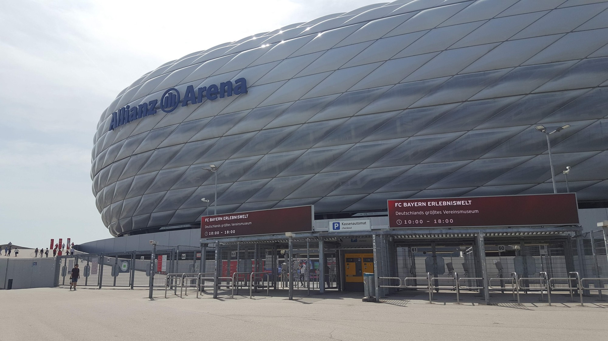
Černý les — Titisee a hodinové domy
Jezerní promenáda v Titisee, velké kukačkové hodiny v Hornbergu-Niederwasser a hodinový dům v areálu Hofgut Sternen u Breitnau. Červen 2019.
Hornberger Uhrenspiele · Hofgut Sternen
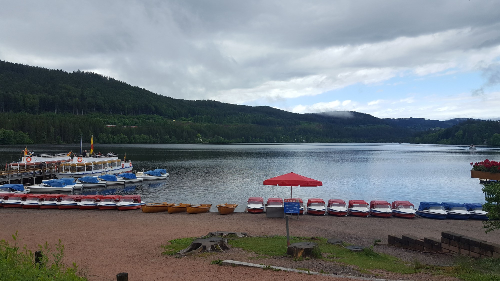
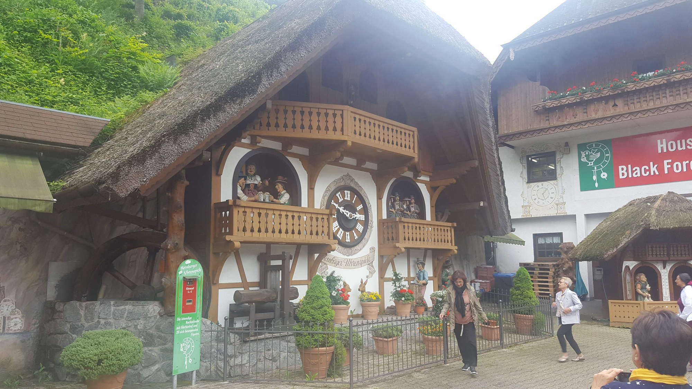
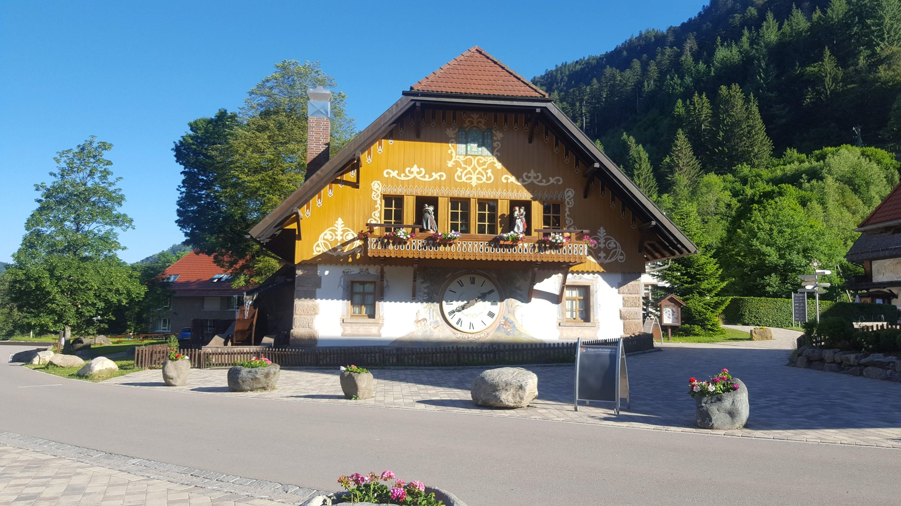
Pro koho je tato stránka: kdo má rád Německo bez klišé "Berlín = pivo, Mnichov = Oktoberfest". Šest měst a míst, kde jsem byl s autobusem i osobně.
Co tady najdeš: Berlín, Drážďany, Wolfsburg (auta), Baden-Baden (lázně), Dachau (památník) a soukromé místo Raketenstation Hombroich.
Poznámky k cestě
Německo je země, kterou jako řidič procestuju několikrát do roka, ale málokdy se zastavím. Tahle stránka je o místech, kde jsem se zastavil naschvál — v Berlíně na pár dní, v Drážďanech v zimě před Vánocemi, v Dachau za mlhavého dubnového rána a v Hombroichu mezi sochami a betonovými bunkry, kde dnes místo raket stojí umělecká díla.
Dachau je samostatná kapitola. Návštěvu památníku nelze popsat fotkou ani textem — jen tichem mezi bývalými strážními věžemi a panely s příběhy. Patří to mezi věci, které si člověk pamatuje napořád.
Tip na prohlídku Kolína nad Rýnem
Prohlídka Starého Města zahrnuje katedrálu a Hohenzollernbrücke. Aktivitu jsem přes GetYourGuide nevyzkoušel.
Reklama · Za rezervaci mohu získat provizi.
„Některá místa nejsou tam proto, aby se líbila — ale aby se nezapomnělo."
Tip na prohlídku Berlína
Reklama · Za rezervaci mohu získat provizi. Nabídku zobrazuje GetYourGuide.